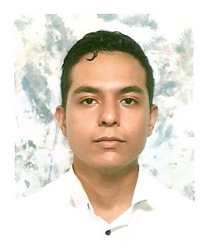

Juan OrtegaDesarrollador Junior |
|
| 0414-027-90-22 | juanortegagv@gmail.com |
PerfilVenezolano de 24 años de edad con intereses en el area tecnológica de la programación, especialmente en el area de desarrollo web y aplicaciones móviles.
Desarrollador junior con ganas de aprender más cada día y perfeccionar mis habilidades para estar a la vanguardia de las nuevas tecnologías, . Responsable, puntual e interesado en trabajos remotos o presenciales con disponibilidad de horarios diurnos o nocturnos. |
Acerca de miDirecciónCaracas,Chacao, Av Uslar Pietri, Res. Mis Encantos EstudiosUnidad Educativa Instituto Teresa de la Parra(2013) Bachiller en Ciencias --- CENEAC(UCV-2017) Curso lógica de programación Nivel 1 Y 2 Curso programación en Java Nivel 1 Y 2 --- UNEWEB(2018) Diplomado en programación (PHP/HTML/CSS/JS/MYSQL) Experiencia LaboralFundación Musical Simon Bolivar(2013-2016) Analista de RRHH Y HCM Repositorio de GitHubhttps://github.com/juanortegagv |
|
|
|